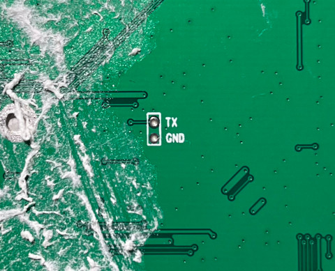
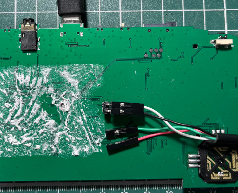

腳位


BOOT0 is starting init dram , base is 0x80000000 init dram , clk is 156 init dram , access_mode is 1 init dram , cs_num is 0x55000001 init dram , ddr8_remap is 0 init dram , sdr_ddr is 1 init dram , bwidth is 16 init dram , col_width is 10 init dram , row_width is 13 init dram , bank_size is 4 init dram , cas is 3 init dram , size is 120 dram init successed,size is 32 1 2 3 jump to BOOT1